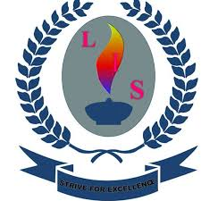
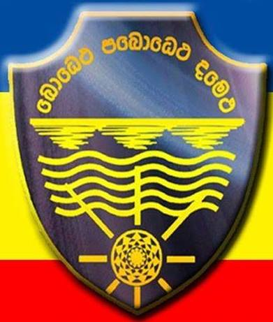
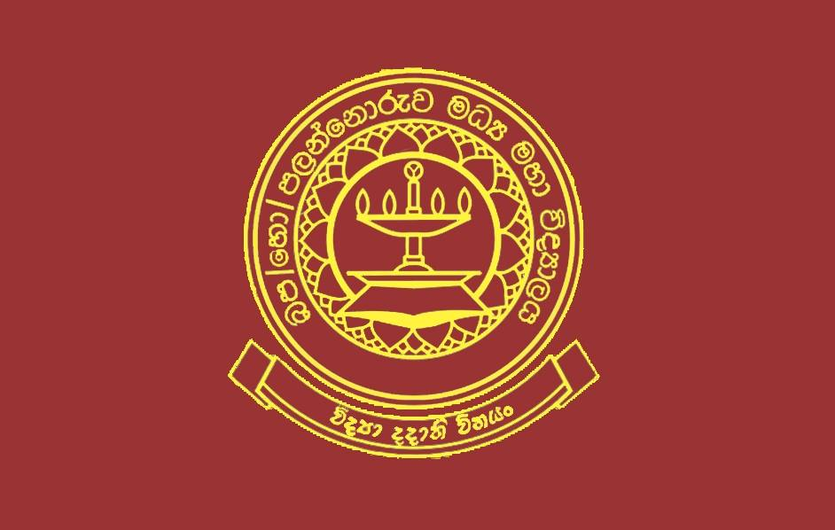
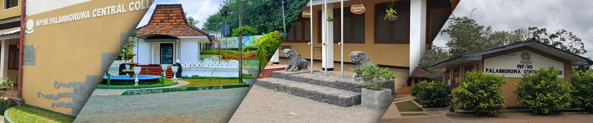

Leeds Piliyandala was established in the District of Colombo on 5th January 2016.
The school currently accommodates more than 100 students and provides various facilities including a fully equipped computer lab, library and also provides students the opportunity to participate in extra-curricular activities such as Swimming, Chess & Karate.
Our professional teaching staff is motivated and passionate about educating your child. They are serious in their teaching and are always willing to explore students’ potentials.
We value and encourage parents to become an integral part of our school community and so contribute to the development of your child’s talents.
We are certain that you will appreciate the dynamic and caring culture that is so much a part of our wonderful school.

Central College Piliyandala (First National Sports School) is a national school located in Piliyandala, Sri Lanka. It is one of the first central colleges established by Hon. C. W. W. Kannangara and has about 1000 students.
The school was started in 1887.It is sports school. it has many sports such as Rugby; Carrom; Cricket; Football; Girls' Football; Chess; Wushu; Badminton; Karate; Swimming; Athletics; Basketball; Volleyball; Netball
Each student is assigned to one of the four houses: Gamunu, Vijaya, Parakrama and Thissa. These houses are named after ancient Sinhala kings of Sri Lanka. An athletic tournament among these houses is held once a year at the beginning of the first term

Central College is a school in Gonapola. it Established on 27 September 1936 and opened date was 01 May 1938 for government. it is located in kaluthara disrict. it is mixed school. There are around 800 students are studing in this school. There are avarage 40 student studing at one class. This college is authority to ministry of Education, Sri lanka goverment.
